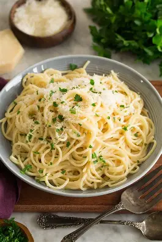

La pasta es el alma de la cocina italiana, elaborada con harina de trigo y agua, y en muchas versiones con huevo. Existe en cientos de formas: spaghetti, penne, rigatoni, fettuccine, cada una diseñada para atrapar salsas de maneras distintas.
Lo que hace especial a la pasta es su versatilidad: puede ir con una simple salsa de manteca y parmesano, con un ragú de carne cocinado durante horas, o con mariscos frescos al ajillo. Es económica, rápida de preparar y profundamente satisfactoria.